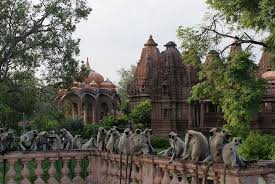

Tourism
Jodhpur's most notable attractions are :
Mehrangarh Fort and MuseumMehrangarh is one of the largest forts in India. Built in around 1459 by Rao Jodha, the fort is situated 410 feet above the city and is enclosed by imposing thick walls. Inside its boundaries there are several palaces known for their intricate carvings and expansive courtyards. |
|
Umaid Bhawan PalaceBuilt between 1928 and 1943, Umaid Bhawan Palace is a magnificent piece of Rajasthan’s heritage, and a symbol of new Jodhpur. Home of the Jodhpur royal family and currently the world’s sixth-largest private residence. |
|
Bal Samand LakeThis lake is a popular picnic spot, built in 1159 AD by Gurjara-Pratihara rulers. It was designed as a water reservoir to provide water to Mandore. The lake has a length of one kilometre, breadth of 50 metres and a depth of 15 metres. |
|
Ghanta GharGhanta Ghar, also known as the clock tower of Rajasthan, is in the Indian city of Jodhpur. It was built by Maharaja Sardar Singh from whom the market takes it name. In fact, the tower dominates the entire scenario. |
 |
Jaswant ThadaThe Jaswant Thada is a cenotaph located in Jodhpur, in the Indian state of Rajasthan. It was built by Maharaja Sardar Singh of Jodhpur State in 1899 in memory of his father, Maharaja Jaswant Singh II, and serves as the cremation ground for the royal Rajput family of Marwar. |
|
Kaylana LakeKaylana Lake is an artificial lake, built by Pratap Singh in 1872. The lake spreads over an area of 84 km². In ancient times this region had palaces and gardens made by two rulers of Jodhpur - Bhim Singh and Takhat Singh. |
|
Machia Biological ParkSmall animal park exhibiting local wildlife, with a nature interpretation center & a cafeteria. |
|
Mandore GardenScenic, landscaped grounds featuring tomblike monuments, a temple, statues & the ruins of Mandore. |
 |
Some other attractions are: Rao Jodha Desert Rock Park, Ratanada Ganesh Temple, Toorji Ka Jhalra, Sardar Samand Lake and Palace, Masooria Hills, Veer Durgadas Smarak (monument, park, and museum) and Bhim Bhadak Cave. Also attractions for some people are at markets of food, antique items, traditional clothes and traditional shoes (also called Jodhpuri Mojari) held in Jodhpur.